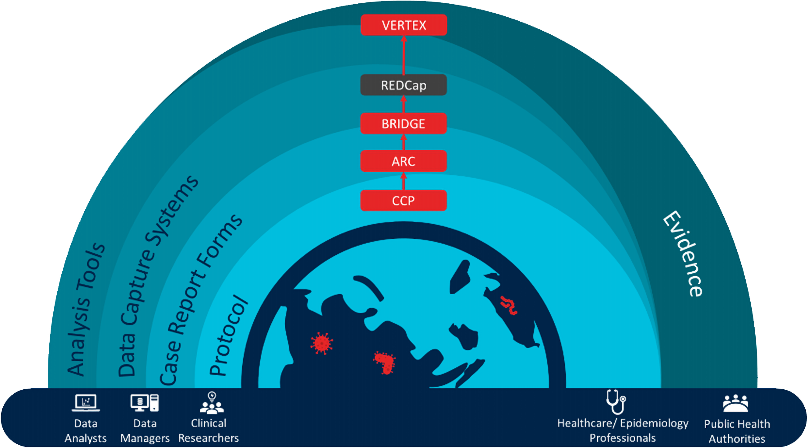

Flexibility
Standardised methods adaptable to the context
Supportive
ISARIC offers help to set up and use the tools
Open Source
Tools can be downloaded, adapted and open for contribution
Scientifically Efficient
Rapid generation of evidence to inform both clinical and policy levels

Hover over any tool
to see details
Key Features
Integrated Platform
Seamlessly connected tools for end-to-end research workflows
Data Capture
Robust systems for collecting and managing research data
Evidence-Based
Built on best practices and clinical evidence
Scalable
Supports large-scale data analysis and reporting